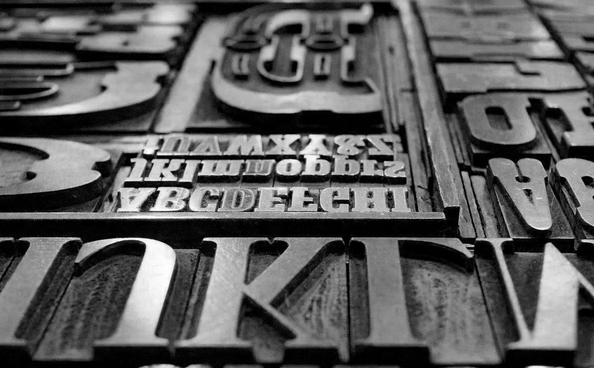

2. Blokea: Forma Tipografikoaren Leherketa

XIX. mendeko egurezko tipoen bilduma.
Industria Iraultzak informazioa urrutitik eta azkar irakurtzeko beharra sortu zuen kalean, eta horrek tipografiak kaligrafia imitatzeari uztea eragin zuen, hizkuntza bisual independente bihurtuz. Berrikuntza tipografikoei begiratuta, liburuetarako diseinatutako letra tradizionalak ez ziren nahikoak kartel publizitarioetan jendearen arreta bereganatzeko. Hori dela eta, tipografoak tamaina itzeletako letra-tipoak sortzen hasi ziren; izan ere, Robert Thornek 1803an Fat Faces (letra gizenak) izenekoak aurkeztu zituenean, letra-tipo klasikoen kontrastea muturreraino eraman zuen. Iturriek diotenez, Thornek Bodoni motako letren trazu lodia zabaldu zuen trazu fina ia ukitu gabe; ondorioz, deigarritasun handia lortu zuen, baina baita "beltztasun" handiko orrialdeak ere, non letraren zuriunea ia desagertzen zen.
Tipografia egipziarrari edo Slab Serif-ari dagokionez, Vincent Figginsek 1815ean erremate karratu eta sendoak zituzten letrak plazaratu zituen. Izen hori eman zitzaien Napoleonen kanpainen ondoren Europan zegoen Egiptorekiko lilura eta moda profitatzeko, baina baita itxura sendo horrek hango monumentuen monumentaltasuna gogorarazten zuelako ere. Era berean, William Caslon IV.ak 1816an lehenengo Sans Serif (serifarik gabeko letra) aurkeztu zuen. Hala ere, estilo honek hamarkadak behar izan zituen onartua izateko, jendeak "Grotesque" deitzen baitzion mespretxuz; beste era batera esanda, gizartea ez zegoen oraindik prest errematerik gabeko letra baten soiltasun modernoa onartzeko, hasieran Sans Serifa soilik hitz bakarrak nabarmentzeko erabiltzen baitzen, inoiz ez testu jarraituetarako.
Egurezko tipoen garrantzia aztertuz, Darius Wellsek 1827an alboko mozteko makina asmatu zuen, eta horrek iraultza ekarri zuen inprentara. Puntu honetan, tamaina erraldoiko letrak metalez egitea ezinezkoa zen, beruna oso pisutsua zelako eta hoztean deformatzen zelako; gainera, metal handiek hoztean barruko hutsuneak sortzen zituzten, piezak ahulago bihurtuz. Aldiz, egurra (batez ere astigarra bezalako egur gogorrak) arinagoa eta merkeagoa zenez, kartel handiak ekoiztea erraztu zuen. Orobat, Wellsen makinak letrak zehaztasun handiz eta masan ekoiztea ahalbidetu zuen, diseinu tipografikoaren "leherketa" teknikoa ahalbidetuz. Handik gutxira, William Leavenworth-ek pantografoa egurrezko tipoen ekoizpenean aplikatu zuenean, letra beraren tamaina desberdinak erraz sortzeko bidea ireki zen.
Aipatutako guztia kontutan hartuz, esan dezakegu Industria Iraultzak letra-tipoen forma aldatzeaz gain, komunikazioaren hierarkia berri bat sortu zuela. Diseinua estetika klasikotik funtzio komertzial eta "oihulari" batera igaro zen; beraz, tipografia jada ez zen testu soil bat, irudi deigarri bihurtu zen hiri zaratatsuaren barruan kontsumitzailearen arreta harrapatzeko tresna nagusi bezala. Garai honetako kartelak, "hormetako prentsa" deituak, tipografia askotarikoen nahasketa bihurtu ziren, non tamaina eta estilo bakoitzak informazioaren garrantzia markatzen zuen.